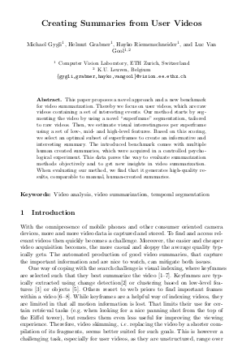

|  |
Authors Michael Gygli, Helmut Grabner, Hayko Riemenschneider and Luc Van GoolAbstract This paper proposes a novel approach and a new benchmark for video summarization. Thereby we focus on user videos, which are raw videos containing a set of interesting events. Our method starts by segmenting the video by using a novel "superframe" segmentation, tailored to raw videos. Then, we estimate visual interestingness per superframe using a set of low-, mid- and high-level features. Based on this scoring, we select an optimal subset of superframes to create an informative and interesting summary. The introduced benchmark comes with multiple human created summaries, which were acquired in a controlled psychological experiment. This data paves the way to evaluate summarization methods objectively and to get new insights in video summarization. When evaluating our method, we find that it generates high-quality results, comparable to manual, human-created summaries. |
Overview
Video "Cooking"
Video "Bike Polo"
We provide the code for the superframe segmentation HERE.
Readme
############################ # # # Superframe Segmentation # # # ############################ Temporal segmentation code of the paper: Creating Summaries from User Videos by Michael Gygli, Helmut Grabner, Hayko Riemenschneider and Luc Van Gool published in ECCV 2014, Zurich. Code by Michael Gygli, PhD student @ ETH Zurich, Switzerland Version: 0.1 Please report problems regarding the standard evaluation procedure to gygli@vision.ee.ethz.ch ========== REQUIREMENTS: In order to run this code you need Matlab with the "Computer Vision Toolbox". ========== MAIN CONTENTS: demo.m File how to extract superframes example_frames Containes frames used in the demo ...
We provide a new dataset (SumMe) consisting of 25 videos, each annotated with at least 15 human summaries (390 in total). The data consists of videos, annotations and evaluation code, as used in this paper.
Download
You can download the data (Size: 2.2 GB) from HERE.
Readme
############################
# #
# THE SUMME DATASET #
# #
############################
Dataset & evaluation code of the paper "Creating Summaries from User Videos"
by Michael Gygli, Helmut Grabner, Hayko Riemenschneider and Luc Van Gool
published in ECCV 2014, Zurich.
Code by Michael Gygli, PhD student @ ETH Zurich, Switzerland
Version: 0.1
==========
CONTAINS:
demo.m File that shows how to evaluate your summary
GT/ folder containing the human summary selections
videos/ folder with the videos themselves in webm and mp4 (H.264) format
matlab/ code for the evaluation including plotting
python/ basic code for evaluating in python (needs scipy, numpy, matplotlib)
to run the python demo call (from the dataset root):
python python/demo.py
==========
LICENCE:
The videos were partially downloaded from YouTube and may subject to copyright. We don't own the copyright of the videos and only provide them for non-commercial research purposes only.
The annotation data can be used freely for research purposes. Please cite:
@inproceedings{GygliECCV14,
author ={Gygli, Michael and Grabner, Helmut and Riemenschneider, Hayko and Van Gool, Luc},
title = {Creating Summaries from User Videos},
booktitle = {ECCV},
year = {2014}
}